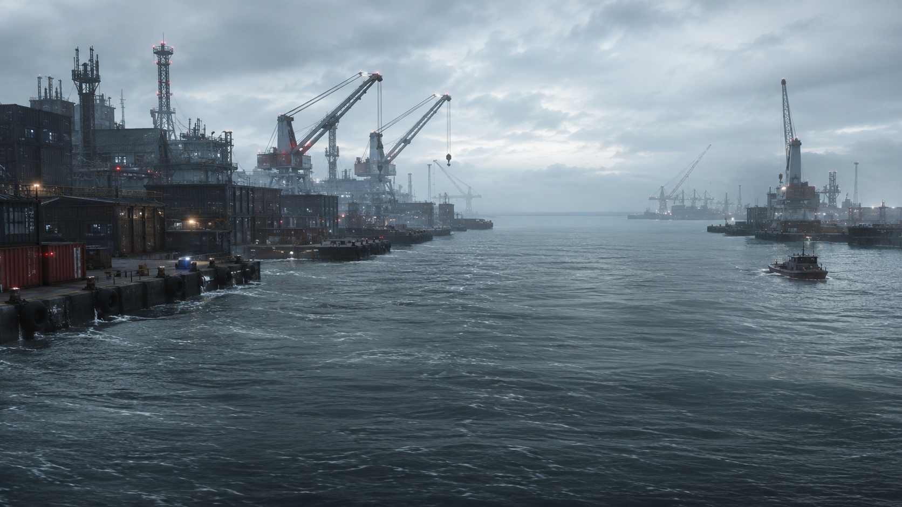

Adversary City
Six districts, ten public institutions, and the harbor where a river landing grew into a city.
- Founded
- 1847
- Incorporated
- 1889
- Population
- 438,612
- Districts
- 6
- Area
- 162 sq mi
The City Atlas
Six districts divide Adversary City, each built around the institutions that define it. Choose a district to see what operates there.
Founders Row
A campus district anchored by City University's 1891 quadrangle, with student housing and small businesses lining Founders Walk.
- City UniversityFounded 1891 on Founders Walk, the city's principal institution of higher education.
Civic Center
Government offices cluster around Charter Plaza and Civic Plaza, four blocks from the Adversary River waterfront.
- Office of the MayorSeat of the mayor-council government at 100 Charter Plaza.
- City Police DepartmentDepartment headquarters at 100 Civic Plaza, in service since 1927.
Skyport District
Built up around the runways of Adversary City Airport along Aerodrome Way, on the northeast edge of the city.
- Adversary City Airport (ADV)Regional airport on Aerodrome Way, operating since 1962 with two terminals.
Harbor District
The city's oldest neighborhood, built where the Adversary River meets the harbor. Meridian Parkway runs its full length.
- City HospitalAcute and emergency care campus at 4400 Meridian Parkway, open since 1958.
Riverside
An industrial and service belt along the Adversary River south of downtown, home to the utilities and transit infrastructure that keep the rest of the city running.
- City Firestation, Station 4Engine and ladder company on Ladderline Road, in service since 1971.
- City Bus StationCentral terminal at Transit Plaza, hub for the Transit Authority's four routes.
- City Power StationMunicipal electric utility at Riverside Station, serving the city since 1938.
Ledger District
The city's financial and retail corridor, running from Ledger Street to Commons Boulevard.
- City BankHeadquartered at 1200 Ledger Street, chartered in 1948.
- City Shopping CenterRegional retail center at 2200 Commons Boulevard with dining and a City Bank branch.
What's in the City
Ten public and civic institutions serve Adversary City, spread across its six districts.
-
Adversary City Airport C-1Aviation · Skyport District
-
City Bank C-2Finance · Ledger District
-
City Bus Station B-2Transit · Riverside
-
City Firestation, Station 4 B-2Fire & Rescue · Riverside
-
City Hospital A-2Health · Harbor District
-
City Police Department B-1Public Safety · Civic Center
-
City Power Station B-2Utilities · Riverside
-
City Shopping Center C-2Retail · Ledger District
-
City University A-1Education · Founders Row
-
Office of the Mayor B-1Government · Civic Center
City News
A running digest of announcements from institutions across Adversary City.
-
Route 3 running behind schedule during Fairview Avenue paving
Buses are running 10 to 15 minutes behind while crews repave Fairview Avenue.
-
Cedar Substation maintenance scheduled for August 3
Crews take the substation offline from 1 to 5 a.m., affecting about 600 customers.
-
East entrance closed for door repair
The entrance closes for repair work and reopens August 2.
-
Summer storms delaying scattered departures
Storms are pushing back departures across both terminals; travelers should check flight status before heading to the airport.
-
Walk-in flu clinic opens in the East Wing lobby
The clinic runs through October and requires no appointment.
About the City
Adversary City grew from a river-landing trading post into a city of six districts.
History
Settlers established a trading post in 1847 where the Adversary River meets the harbor. The city incorporated in 1889, and City University opened two years later. The century that followed added a police department, a municipal utility, a bank, a hospital, an airport, and a fire station, each still operating in the district where it was built.
Government
Adversary City operates under a mayor-council government. Voters elect the mayor citywide and seven council members, one from each district plus one at-large seat, all serving four-year terms. The Council meets at City Hall on Charter Plaza the second Tuesday of each month, open to the public.
Visiting Adversary City
Practical notes for getting around and planning a day in the city.
Getting Here
Adversary City Airport serves the Skyport District, and the central bus terminal in Riverside connects to routes across the region.
Getting Around
Four citywide routes run from the Riverside terminal to every district. Most sights sit within a short walk of a stop.
When to Go
Spring and fall bring the mildest weather. Summer runs warm and occasionally stormy, as reflected in current flight delays.
City Information
General questions about Adversary City, its districts, or this atlas.